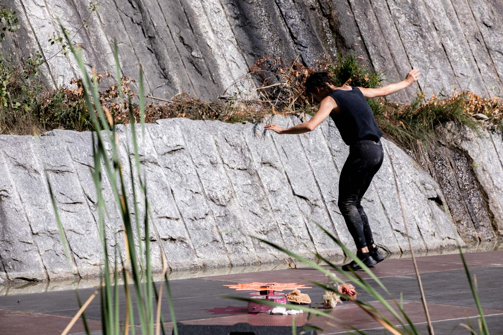
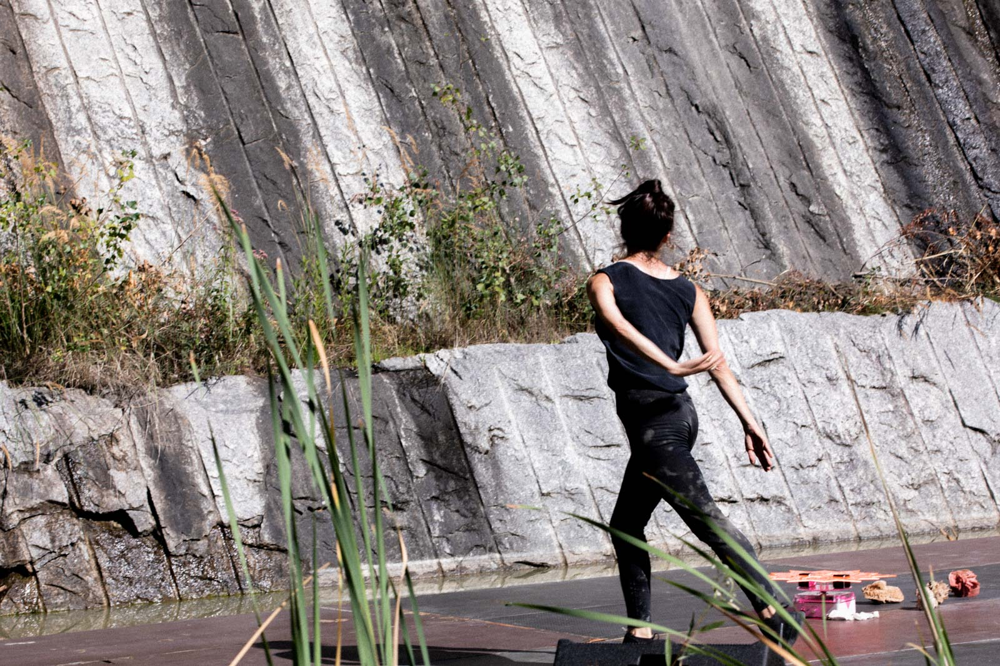

Il Segreto
Il Segreto (The Secret) is a choreographic action for one performer and three Rose Spinner, rotating sound machines imagined and realized with Francesco Cavaliere. Elements on stage alternate and overlap without excluding each other, coexist and give life to an ecosystem geographically close, open, terrain, indeterminate, multi-time, in which the human becomes multiform and alien.
The dance is continuously composed and decomposed, giving the impression that the body always takes on different forms and is composed of new substances, aligning or deviating from the elements which compose the scene.
Il Segreto is part of the project NO RAMA, conceived and created with Marta Capaccioli, Lucrezia Palandri, Giulia Pastore, Jules Goldsmith, Francesco Cavaliere. Its practice focuses on the veiled but hidden tale. The whispered word becomes a gesture and the engine of the performer's movement. It resonates in the body and gets lost in space, creating a further element, nearly gaseous, that mixes with other forms of human and non-human life.
Production Cab 008.
Co-produced by Teatro Metastasio di Prato and FOG Triennale Milano Performing Arts.
Supported by L’Arboreto – Teatro Dimora di Mondaino, Armunia / Festival Inequilibrio, Centro
nazionale di produzione / Virgilio Sieni, spazioK.Kinkaleri, Azienda Speciale Palaexpo – Mattatoio |
Progetto Prendersi cura
Supported by Regione Toscana, MiBACT and Comune di Firenze.
The project was realised with the contribution of ResiDance XL luoghi e progetti di residenza
per creazioni coreografiche, azione della Rete Anticorpi XL / Network Giovane Danza D’autore
coordinated by L’Arboreto – Teatro Dimora di Mondaino.
Concept
Annamaria Ajmone
Performer
Annamaria Ajmone / Marta Capaccioli / Lucrezia Palandri
Original music and sound diffusion system
Francesco Cavaliere
Costume
Jules Goldsmith
“Meanwhile, despite Nature, despite grey goo, real things writhe and smack into one another. Some leap out because industry malfunctions, or functions only too well. Oil bursts out of its ancient sinkhole and floods the Gulf of Mexico. Gamma rays shoot out of plutonium for twenty-four thousand years. Hurricanes congeal out of massive storm systems, fed by the heat from the burning of fossil fuels. The ocean of telephone dials mounts ever higher. Paradoxically, capitalism has unleashed myriad objects upon us, in their manifold horror and sparkling splendor. Two hundred years of idealism, two hundred years of seeing humans at the center of existence, and now the objects take revenge, terrifyingly huge, ancient, long-lived, threateningly minute, invading every cell in our body.”
Timothy Morton, ”Hyperobjects”
Listen to Francesco Cavaliere
PRESS
"Annamaria Ajmone: la danza, il processo, l’imprevedibile", Mattia
Cappelletti
FLASHART (2020)
"C’è danza su Marte", David Della Scala
QUASIRADIO (2020)